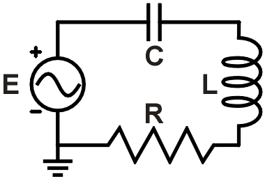
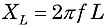
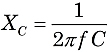
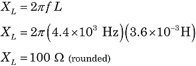
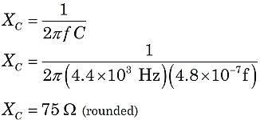
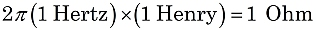
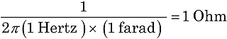

Calculating Reactance
|
 f = 4.4 kHz R = 220 Ω L = 3.6 mH C = 0.48 μf |
|
Figure 1. Example RLC circuit |
The current in a circuit can be "impeded" by three types of circuit components:
- Resistors: contribute resistance, R (in ohms)
- Inductors: contribute inductive reactance, XL (in ohms)
- Capacitors: contribute capacitive reactance, XC (in ohms)
Here are the formulas to calculate the last two above, XL and XC. Notice that both depend on the AC frequency, f:
 and 
where f is the frequency in Hertz (or sec−1), L is inductance in Henries, and C is capacitance in farads. You will seldom encounter an inductance as large as 1 Henry or a capacitance of 1 farad, but instead deal with prefixes like milli-, micro-, and even pico-. Working with these prefixes gets easier with practice!
Inductive reactance
For example, consider the circuit shown in Figure 1. Let's use the formula for XL to calculate the reactance of the inductor. Converting the prefixes to scientific notation can help avoid mistakes. Note that f = 4.4 kHz = 4.4 x 103 Hz and L = 3.6 mH = 3.6 x 10−3 H.

You might notice that the product of kilo- (or 103) and milli- (or 10−3) yields: 103⋅10−3 = 1. That makes the calculation easier: XL = 2π ⋅ 4.4 ⋅ 3.6 = 100 Ω (rounded).
Capacitive reactance
Similarly, we can use the formula for XC to calculate the reactance of the capacitor. Again, converting to scientific notation, f = 4.4 x 103 Hz and C = 0.48 μf = 4.8 x 10−7 f.

Again, if you are careful with the prefixes, you notice that the product of kilo- (or 103) and micro- (or 10−6) yields 103⋅10−6 = 10−3, or 1/1000. Then XC = 1000/(2π ⋅ 4.4 ⋅ 0.48) = 75 Ω (rounded).
These electrical units are defined so their products and quotients work out to ohms:
 and 